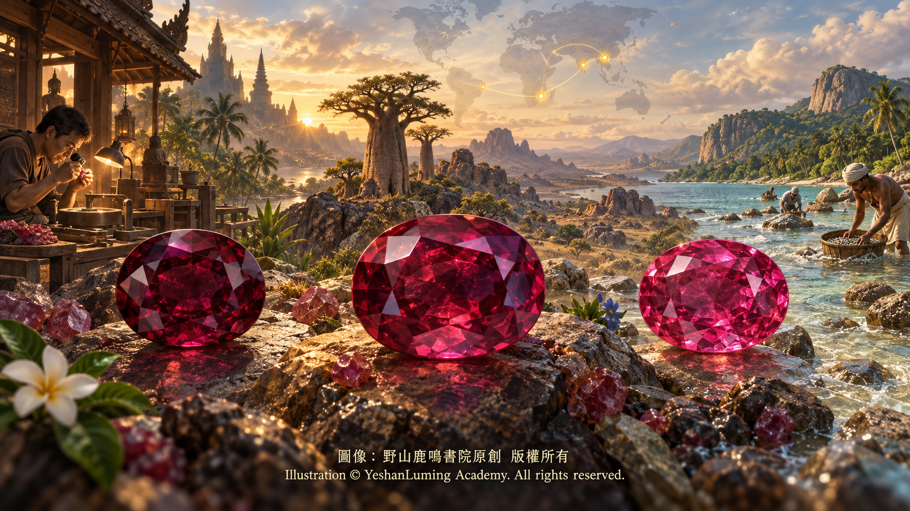

全球遺珠 · 泰國、馬達加斯加與斯里蘭卡紅寶石Hidden Treasures of the World · Rubies from Thailand, Madagascar, and Sri Lanka
The World of Gemstones · Ruby SeriesHidden Treasures of the World · Rubies from Thailand, Madagascar, and Sri Lanka
The World of Gemstones · Ruby Series全球遺珠 · 泰國、馬達加斯加與斯里蘭卡紅寶石
寶石世界·紅寶石篇
寶石世界·紅寶石篇（106）The World of Gemstones · Ruby Series (106)
當我們在彩色寶石市場上談論紅寶石的產地時，緬甸莫谷與莫三比克的名字，往往如同白晝的烈日般耀眼，吸引了大眾最多的目光。
然而，在國際寶石學界與資深收藏家的地圖上，還有幾片土地同樣閃爍著無法忽視的紅色光芒。它們是曾經深刻影響世界彩色寶石貿易的泰國、被視為地質寶庫的馬達加斯加，以及自古盛產各類寶石的印度洋明珠斯里蘭卡。
這些堪稱「全球遺珠」的產地，各自帶有截然不同的地質基因。它們出產的紅寶石，無論是顏色性格、內部微觀世界，還是市場地位，都各有千秋。只有理解它們，我們對世界紅寶石產地的認識才算更加完整。
首先，我們將時鐘撥回二十世紀中後期，去認識那位曾經在世界彩色寶石商貿史上翻雲覆雨的昔日霸主——泰國紅寶石。
泰國紅寶石主要產自泰國東部的尖竹汶府（Chanthaburi）與桐艾府（Trat）。與莫三比克紅寶石主要形成於角閃岩及其他變質岩環境不同，泰國紅寶石屬於典型的玄武岩相關型紅寶石。雖然兩者的地質成因不同，但許多泰國紅寶石同樣具有較高的鐵含量。
較高的鐵含量，賦予了泰國紅寶石非常鮮明的視覺性格。
鐵不僅會吸收部分可見光，也會削弱鉻元素所激發的紅色螢光。因此，許多泰國紅寶石呈現出濃郁、深沉的紅色，有時顏色偏暗、偏黑，甚至略帶棕褐色調，近似熟透桑椹的色澤；在長波紫外線下，其紅色螢光通常也較弱，部分樣品甚至接近惰性。
在珠寶市場上，這類帶有深暗色調的紅寶石，歷史上常被稱為「暹羅紅寶石（Siam Ruby）」。
但是，「暹羅紅寶石」主要是一個沿襲至今的歷史性商業稱呼，通常使人聯想到泰國或泰柬邊境一帶出產的深色紅寶石，並不是現代寶石實驗室判定產地時採用的嚴格分類。
雖然在螢光與明亮度方面不如某些低鐵紅寶石，泰國紅寶石中的部分晶體卻可以具有良好的透明度。更重要的是，泰國在二十世紀後半葉建立起了極其成熟的彩色寶石加工與貿易體系。
當我們在彩色寶石市場上談論紅寶石的產地時，緬甸莫谷與莫三比克的名字，往往如同白晝的烈日般耀眼，吸引了大眾最多的目光。
然而，在國際寶石學界與資深收藏家的地圖上，還有幾片土地同樣閃爍著無法忽視的紅色光芒。它們是曾經深刻影響世界彩色寶石貿易的泰國、被視為地質寶庫的馬達加斯加，以及自古盛產各類寶石的印度洋明珠斯里蘭卡。
這些堪稱「全球遺珠」的產地，各自帶有截然不同的地質基因。它們出產的紅寶石，無論是顏色性格、內部微觀世界，還是市場地位，都各有千秋。只有理解它們，我們對世界紅寶石產地的認識才算更加完整。
首先，我們將時鐘撥回二十世紀中後期，去認識那位曾經在世界彩色寶石商貿史上翻雲覆雨的昔日霸主——泰國紅寶石。
泰國紅寶石主要產自泰國東部的尖竹汶府（Chanthaburi）與桐艾府（Trat）。與莫三比克紅寶石主要形成於角閃岩及其他變質岩環境不同，泰國紅寶石屬於典型的玄武岩相關型紅寶石。雖然兩者的地質成因不同，但許多泰國紅寶石同樣具有較高的鐵含量。
較高的鐵含量，賦予了泰國紅寶石非常鮮明的視覺性格。
鐵不僅會吸收部分可見光，也會削弱鉻元素所激發的紅色螢光。因此，許多泰國紅寶石呈現出濃郁、深沉的紅色，有時顏色偏暗、偏黑，甚至略帶棕褐色調，近似熟透桑椹的色澤；在長波紫外線下，其紅色螢光通常也較弱，部分樣品甚至接近惰性。
在珠寶市場上，這類帶有深暗色調的紅寶石，歷史上常被稱為「暹羅紅寶石（Siam Ruby）」。
但是，「暹羅紅寶石」主要是一個沿襲至今的歷史性商業稱呼，通常使人聯想到泰國或泰柬邊境一帶出產的深色紅寶石，並不是現代寶石實驗室判定產地時採用的嚴格分類。
雖然在螢光與明亮度方面不如某些低鐵紅寶石，泰國紅寶石中的部分晶體卻可以具有良好的透明度。更重要的是，泰國在二十世紀後半葉建立起了極其成熟的彩色寶石加工與貿易體系。
二十世紀六〇年代以後，隨著緬甸對外寶石貿易受到限制，泰國尖竹汶迅速崛起，逐漸成為世界重要的紅寶石與藍寶石切磨、加熱、集散和交易中心。即使原石并非产自泰国，也常被送到尖竹汶加工，再由这里进入国际市场。
泰國工匠並不是寶石熱處理技術的最初發明者。人類利用加熱改善剛玉顏色的歷史十分悠久，但是，泰國工匠在傳統經驗的基礎上不斷改進、掌握並大規模推廣了現代彩色寶石熱處理技術。
通過對溫度、氣氛與時間的控制，一部分原本顏色過暗、帶有藍色調或其他不理想色調的紅寶石，可以得到一定程度的改善。尖竹汶也因此成為近現代彩色寶石加工史上無法繞過的一座城市。
如今，泰國本土紅寶石的產量已經大幅減少，具有商業價值的優質新礦石也遠不如昔日豐富。但是，尖竹汶作為世界彩色寶石加工、交易和技術中心的地位依然延續，泰國紅寶石曾經書寫的市場傳奇也並未消失。
如果說泰國是退位的昔日霸主，那麼位於非洲東海岸之外的馬達加斯加，則是一座令寶石學家與收藏家充滿驚喜，卻又深感複雜的地質奇蹟之島。
馬達加斯加的地質構造極其古老而複雜。自二十世紀九〇年代末以來，島上先後發現了多處震動國際市場的剛玉礦床。其中較受關注的產區，包括北部安齊拉納納附近的Ambondromifehy，以及東部的瓦圖曼德里（Vatomandry）與安迪拉梅納（Andilamena）等地。
馬達加斯加最令人驚異之處，在於這座島嶼可以出產顏色與品質差異極大的紅寶石和藍寶石。
馬達加斯加紅寶石形成於多種複雜的變質岩環境，部分礦床與角閃岩、基性至超基性岩及其他高度變質岩石有關。紅寶石晶體在原生岩石中形成以後，又可能經歷漫長的風化、侵蝕與河流搬運，最後富集於次生沖積礦床之中。
複雜多變的地質環境，造成不同礦區的紅寶石在微量元素、顏色、透明度與螢光反應等方面出現巨大差異。
部分馬達加斯加紅寶石顏色鮮豔、鐵含量相對較低，在紫外線下可以呈現明顯的紅色螢光；另一些樣品則含有較多鐵元素，顏色更為深沉，紅色螢光也相對較弱。其品質跨度可以從不透明的普通剛玉，一直延伸到具有鮮豔顏色和良好透明度的優質紅寶石。
這種地質與化學成分的多樣性，也為權威寶石實驗室的產地鑑定帶來了挑戰。
某些高品質馬達加斯加紅寶石的顏色與內部特徵，可能與緬甸、莫三比克或其他變質岩型產地的紅寶石出現重疊。只依靠肉眼觀察顏色，甚至只依靠顯微鏡觀察某幾種包裹體，都可能難以作出準確的產地判斷。
在顯微鏡下，馬達加斯加不同礦區紅寶石的內含物變化很大。部分樣品中可以見到細小或較粗的金紅石針，也可能出現角閃石、磷灰石、鋯石及其他礦物晶體，此外還可能觀察到指紋狀癒合裂隙、生長色帶與各類流體包裹體。
這些包裹體的種類、形態與組合，可以為產地鑑定提供重要線索，但它們並不是所有馬達加斯加紅寶石共同擁有的統一特徵，更不能把任何一種礦物包裹體視為馬達加斯加產地的唯一身份證。
對於收藏者而言，馬達加斯加紅寶石真正的魅力，不在於它是否可以模仿或替代緬甸紅寶石，而在於它本身具有極為多樣的地質身世與視覺風格。
每一個新礦區的發現，都可能帶來不同的顏色、包裹體與化學特徵。這座島嶼仿佛仍然保存著許多沒有完全打開的地質寶庫，等待寶石學家繼續探索。
最後，我們將目光轉向那座自古便以寶石聞名、曾受到馬可·波羅讚歎的印度洋島嶼——斯里蘭卡。
斯里蘭卡素有「光明富麗之島」的美譽，也是世界上歷史最悠久的寶石產地之一。紅寶石、藍寶石、星光剛玉、金綠寶石、尖晶石以及其他眾多寶石，都曾從這片土地進入王室寶庫與國際市場。
斯里蘭卡紅寶石最初形成於古老的變質岩環境。經過漫長的風化、侵蝕與河流搬運之後，大量寶石富集在當地被稱為「伊蘭姆（Illam）」的含寶石砂礫層中，因此，斯里蘭卡寶石主要通過沖積砂礦開採。
若用最具代表性的視覺印象來概括，許多斯里蘭卡紅寶石顯得清透明亮，顏色也常常偏淺、偏粉，或者略帶紫色。但是，不同樣品之間仍然存在很大差異，不能把所有斯里蘭卡紅寶石都概括為同一種色調。
由於部分斯里蘭卡紅色剛玉的鉻含量較低，其顏色可能呈現明亮的粉紅色、紫紅色或橙紅色。這也帶來了一個至今仍然存在的寶石學與商業問題：一顆淺紅色剛玉究竟应当称为红宝石，还是粉红色蓝宝石？
红宝石与粉红色蓝宝石之间，并不存在由全世界宝石实验室共同采用的绝对颜色分界。同一颗介于粉红与红色之间的刚玉，在不同实验室、不同市场传统或不同观察条件下，可能得到不同的品种名称。因此，红宝石与粉红色蓝宝石之间的界线，并不单纯取决于某一项固定的铬含量数值，而是要综合考虑宝石实际呈现的色相、饱和度和明度。不少斯里兰卡红宝石具有良好的透明度和清亮的视觉效果。配合适当的切工，它们在转动时可以呈现出轻盈、灵动而富有生命力的光芒。
这种视觉魅力并不是因为斯里兰卡红宝石具有比其他产地红宝石更高的折射率或色散。所有红宝石都属于刚玉，基本光学常数大致相同。斯里兰卡红宝石的清亮感，主要来自其较浅或较明亮的颜色、良好的透明度、较少遮挡光线的内含物，以及恰当的切割比例。
如果一颗斯里兰卡红宝石能够呈现鲜艳而纯正的红色，同时具备良好的透明度、重量和切工，那么无论其产量多么稀少，同样可能成为国际市场上备受重视的优质宝石。

Click to enlarge
当泰国、马达加斯加与斯里兰卡这三颗「全球遗珠」被放到显微镜下时，它们各自的内部世界，可以为产地鉴定提供哪些线索呢？
在泰国红宝石中，通常较少见到大面积、细密交织的丝绢状金红石针。显微镜下可能观察到明显的聚片双晶纹、生长分带、负晶或各种固态矿物包裹体。泰国红宝石中有时还可以见到一种颇为生动的结构：固态晶体包裹体周围伴生盘状或环状的应力裂隙，整体外观近似一枚「煎蛋」。
这些裂隙可能是由于包裹体与周围刚玉在形成、冷却或后期地质过程中产生不同的体积变化与内部应力所造成。有些裂隙中可能含有流体，但不能把所有这类结构一概称为包围固态晶体的「液态层」。
在马达加斯加红宝石中，显微特征因矿区不同而发生显著变化。金红石针、角闪石、磷灰石、锆石、指纹状愈合裂隙、生长色带及其他矿物或流体包裹体，都可能出现。正因为马达加斯加红宝石的包裹体组合十分复杂，并可能与多个产地发生重叠，所以鉴定者必须结合具体样品进行分析，不能根据一项孤立特征仓促作出结论。
在斯里兰卡红宝石中，经常可以观察到细长的金红石针。这些针状包裹体可能相互交错，也可能按一定晶体方向排列，在某些弧面切割的刚玉中，还可能参与形成星光效应。锆石晶体也是斯里兰卡刚玉中一种具有重要参考价值的包裹体。它们可能呈圆润、近圆形或不规则晶体，有时周围伴有盘状裂隙或应力晕。
锆石内部微量放射性元素造成的晶格损伤、锆石与宿主刚玉之间的物理性质差异，以及宝石后期经历的地质作用或加热处理，都可能影响这些裂隙与应力结构的形态。在交叉偏光下，部分受应力影响的区域还可能呈现干涉色。
但是，金红石针与锆石晶体都不是斯里兰卡刚玉独有的产地标志。它们同样可能出现在其他地区的红宝石与蓝宝石中，必须与其他显微特征、光谱和化学数据共同分析。
综合而言，泰国红宝石属于典型的玄武岩相关型红宝石。其铁含量通常较高，颜色较深，红色荧光较弱；显微镜下可能见到聚片双晶、生长分带，以及固态晶体周围伴生的盘状或环状应力裂隙。
马达加斯加红宝石形成于多种复杂的变质岩环境，不同矿区的微量元素、颜色、荧光与包裹体组合差异很大。它最大的特点不是某一种固定的包裹体，而是地质来源与宝石学特征的高度多样性。
斯里兰卡红宝石最初形成于古老变质岩中，后来大量富集于冲积砂砾层。许多样品颜色较浅而明亮，透明度良好；显微镜下可能见到金红石针、锆石晶体、应力裂隙及指纹状愈合裂隙等特征。
无论泰国、马达加斯加还是斯里兰卡，任何一种包裹体、荧光反应或颜色现象，都不足以单独证明一颗红宝石的地理来源。现代专业实验室必须综合显微镜观察、紫外—可见光吸收光谱、红外光谱、拉曼光谱、微量元素化学分析，以及长期积累的已知产地参考样品，才能作出相对可靠的产地判断。
看懂了泰国红宝石的深沉、马达加斯加红宝石的多面，以及斯里兰卡红宝石的清透，我们便不必继续沉溺于单一产地的迷信。
世界上的每一片宝石土地，都在漫长的地质历史中，以各自不同的岩石环境、微量元素与形成过程，调配出属于自己的红色传奇。产地赋予红宝石历史、稀有性与文化想象，却不能代替宝石本身的品质。一颗红宝石真正的美与价值，最终仍然要回到它的颜色、透明度、净度、重量、切工、处理状况，以及专业实验室所能提供的科学证据。
缅甸莫谷有莫谷的烈焰，莫三比克有莫三比克的力量；泰国拥有深沉的历史，马达加斯加保存着复杂的地质谜题，而斯里兰卡则闪耀着清澈灵动的岛屿之光。它们没有必要彼此模仿，也不应该被简单排列成一条永远不变的尊卑等级。
因为每一种真正美丽的红宝石，都是大地用亿万年时间，為人類写成的一封红色情书。
（未完待续）
When we discuss ruby origins in the colored gemstone market, the names of Mogok, Myanmar, and Mozambique often shine as brilliantly as the midday sun, attracting nearly all the public’s attention.
Yet on the maps of international gemologists and experienced collectors, several other lands glow with an equally unforgettable red radiance. They are Thailand, which once profoundly influenced the global colored gemstone trade; Madagascar, regarded as a geological treasure house; and Sri Lanka, the Pearl of the Indian Ocean, renowned since ancient times for its wealth of gemstones.
These origins, worthy of being called the world’s “hidden treasures,” possess distinctly different geological lineages. Their rubies each have their own character of color, microscopic inner world, and position in the marketplace. Only by understanding them can we develop a more complete picture of the world’s ruby sources.
First, let us turn the clock back to the middle and latter decades of the twentieth century and meet the former sovereign that once wielded immense influence over the global colored gemstone trade—the ruby of Thailand.
Thai rubies come principally from Chanthaburi and Trat Provinces in eastern Thailand. Unlike Mozambique rubies, which form mainly in geological environments associated with amphibolite and other metamorphic rocks, Thai rubies are typical basalt-related rubies. Although the two have different geological origins, many Thai rubies likewise contain relatively high levels of iron.
This higher iron content gives Thai rubies an unmistakable visual character.
Iron not only absorbs part of the visible light spectrum, but also weakens the red fluorescence excited by chromium. Consequently, many Thai rubies display a rich, profound red that may sometimes appear dark, nearly black, or even slightly brownish, resembling the color of a fully ripened mulberry. Under long-wave ultraviolet light, their red fluorescence is generally weak, and some specimens are nearly inert.
In the jewelry market, rubies with this deep, dark color were historically known as “Siam rubies.”
However, “Siam ruby” is primarily a historical trade term that has survived into the present day. It generally evokes the dark red rubies mined in Thailand or along the Thai-Cambodian border, but it is not a strict classification used by modern gemological laboratories to determine geographic origin.
Although Thai rubies may not equal certain low-iron rubies in fluorescence and brightness, some Thai crystals possess good transparency. More importantly, during the latter half of the twentieth century, Thailand established an exceptionally mature colored gemstone processing and trading system.
When we discuss ruby origins in the colored gemstone market, the names of Mogok, Myanmar, and Mozambique often shine as brilliantly as the midday sun, attracting nearly all the public’s attention.
Yet on the maps of international gemologists and experienced collectors, several other lands glow with an equally unforgettable red radiance. They are Thailand, which once profoundly influenced the global colored gemstone trade; Madagascar, regarded as a geological treasure house; and Sri Lanka, the Pearl of the Indian Ocean, renowned since ancient times for its wealth of gemstones.
These origins, worthy of being called the world’s “hidden treasures,” possess distinctly different geological lineages. Their rubies each have their own character of color, microscopic inner world, and position in the marketplace. Only by understanding them can we develop a more complete picture of the world’s ruby sources.
First, let us turn the clock back to the middle and latter decades of the twentieth century and meet the former sovereign that once wielded immense influence over the global colored gemstone trade—the ruby of Thailand.
Thai rubies come principally from Chanthaburi and Trat Provinces in eastern Thailand. Unlike Mozambique rubies, which form mainly in geological environments associated with amphibolite and other metamorphic rocks, Thai rubies are typical basalt-related rubies. Although the two have different geological origins, many Thai rubies likewise contain relatively high levels of iron.
This higher iron content gives Thai rubies an unmistakable visual character.
Iron not only absorbs part of the visible light spectrum, but also weakens the red fluorescence excited by chromium. Consequently, many Thai rubies display a rich, profound red that may sometimes appear dark, nearly black, or even slightly brownish, resembling the color of a fully ripened mulberry. Under long-wave ultraviolet light, their red fluorescence is generally weak, and some specimens are nearly inert.
In the jewelry market, rubies with this deep, dark color were historically known as “Siam rubies.”
However, “Siam ruby” is primarily a historical trade term that has survived into the present day. It generally evokes the dark red rubies mined in Thailand or along the Thai-Cambodian border, but it is not a strict classification used by modern gemological laboratories to determine geographic origin.
Although Thai rubies may not equal certain low-iron rubies in fluorescence and brightness, some Thai crystals possess good transparency. More importantly, during the latter half of the twentieth century, Thailand established an exceptionally mature colored gemstone processing and trading system.
Beginning in the 1960s, as Myanmar’s international gemstone trade became increasingly restricted, Chanthaburi rapidly rose to prominence and gradually became one of the world’s major centers for cutting, heating, distributing, and trading rubies and sapphires. Even rough stones mined outside Thailand were frequently sent to Chanthaburi for processing before entering the international market through this vital commercial hub.
Thai craftsmen were not the original inventors of gemstone heat treatment. Humanity has used heat to improve the color of corundum for a very long time. Nevertheless, building upon traditional experience, Thai artisans continually refined, mastered, and promoted modern colored gemstone heat-treatment techniques on a large commercial scale.
Through careful control of temperature, atmosphere, and duration, certain rubies that were originally too dark, carried an undesirable blue component, or displayed other unfavorable tones could be improved to varying degrees. Chanthaburi therefore became an indispensable city in the history of modern colored gemstone processing.
Today, Thailand’s domestic ruby production has declined dramatically, and new gem-quality material with commercial value is far less abundant than it once was. Nevertheless, Chanthaburi remains an important global center of colored gemstone processing, commerce, and technical expertise, while the market legend once written by Thai ruby has never truly disappeared.
If Thailand is a former sovereign that has stepped down from its throne, then Madagascar, lying beyond the eastern coast of Africa, is an island of geological miracles that both astonishes gemologists and collectors and confronts them with extraordinary complexity.
Madagascar possesses an exceptionally ancient and complicated geological structure. Since the late 1990s, a succession of corundum deposits capable of shaking the international market have been discovered across the island. Among the best-known areas are Ambondromifehy near Antsiranana in the north, together with Vatomandry and Andilamena in the east.
What makes Madagascar particularly astonishing is its ability to produce rubies and sapphires spanning an enormous range of colors and qualities.
Madagascar rubies form in several complex metamorphic environments. Some deposits are associated with amphibolite, mafic to ultramafic rocks, and other highly metamorphosed formations. After ruby crystals form within their primary host rocks, they may undergo long periods of weathering, erosion, and river transport before finally becoming concentrated in secondary alluvial deposits.
This complicated and variable geological environment produces enormous differences in the trace elements, colors, transparency, and fluorescence reactions of rubies from different mining regions.
Some Madagascar rubies have vivid colors and comparatively low iron content, allowing them to display noticeable red fluorescence under ultraviolet light. Other specimens contain more iron, giving them a deeper color and relatively weaker red fluorescence. Their quality ranges from ordinary opaque corundum to fine transparent rubies of vivid color.
This diversity of geological environments and chemical compositions also creates considerable challenges for geographic origin determination by authoritative gemological laboratories.
The color and internal characteristics of certain fine Madagascar rubies may overlap with those of rubies from Myanmar, Mozambique, or other metamorphic-related sources. Observing color with the unaided eye—or even examining only a few inclusions under the microscope—may not be sufficient to determine their origin accurately.
Under the microscope, inclusions in Madagascar rubies vary greatly from one mining district to another. Some specimens may contain fine or relatively coarse rutile needles, while amphibole, apatite, zircon, and other mineral crystals may also occur. Fingerprint-like healed fissures, growth banding, and various fluid inclusions can likewise be observed.
The types, forms, and combinations of these inclusions can provide important evidence for origin determination. Nevertheless, they are not a uniform set of characteristics shared by all Madagascar rubies, and no single mineral inclusion can be regarded as an exclusive identity card for Madagascar origin.
For collectors, the true fascination of Madagascar ruby does not lie in whether it can imitate or replace Myanmar ruby, but in the remarkable diversity of its own geological history and visual character.
Every newly discovered mining district may introduce different colors, inclusions, and chemical characteristics. The island seems to preserve many geological treasure houses that have not yet been completely opened, awaiting further exploration by gemologists.
Finally, let us turn our attention to an island in the Indian Ocean that has been renowned for gemstones since ancient times and was once praised by Marco Polo—Sri Lanka.
Sri Lanka is celebrated as the “resplendent island” and is also one of the world’s most ancient gemstone sources. Rubies, sapphires, star corundum, chrysoberyl, spinel, and many other gemstones have journeyed from this land into royal treasuries and international markets.
Sri Lankan rubies originally formed in ancient metamorphic environments. After long periods of weathering, erosion, and river transport, large quantities of gemstones became concentrated in gem-bearing gravel layers locally known as “Illam.” For this reason, Sri Lankan gemstones are mined principally from alluvial deposits.
If we were to summarize their most representative visual impression, many Sri Lankan rubies appear bright and transparent, with colors that are often lighter, pinker, or slightly purplish. Yet substantial differences exist among individual specimens, and not all Sri Lankan rubies can be reduced to a single color profile.
Because some red corundum from Sri Lanka contains relatively low concentrations of chromium, it may display a bright pink, purplish red, or orangy red color. This gives rise to a gemological and commercial question that remains unresolved even today: Should a pale red corundum be called a ruby or a pink sapphire?
There is no absolute color boundary between ruby and pink sapphire that is universally adopted by every gemological laboratory in the world. The same corundum lying between pink and red may receive different variety names from different laboratories, under different market traditions, or in different viewing conditions. The boundary between ruby and pink sapphire therefore does not depend solely upon a fixed chromium concentration, but must take into account the hue, saturation, and tone actually displayed by the gemstone. Many Sri Lankan rubies possess good transparency and a clear, luminous visual appearance. With appropriate cutting, they can reveal a light, lively, and life-filled radiance as they turn.
This visual beauty does not arise because Sri Lankan rubies possess a higher refractive index or greater dispersion than rubies from other origins. All rubies belong to the corundum mineral species and share essentially the same fundamental optical constants. The clear and luminous appearance of Sri Lankan rubies comes mainly from their lighter or brighter colors, good transparency, fewer inclusions that obstruct the passage of light, and well-chosen cutting proportions.
If a Sri Lankan ruby displays a vivid and pure red while also possessing good transparency, weight, and cutting, then no matter how limited its production may be, it can likewise become a fine gemstone highly prized in the international market.
Click to enlarge
When these three “hidden treasures” of Thailand, Madagascar, and Sri Lanka are placed under the microscope, what clues can their inner worlds provide for geographic origin determination?
Thai rubies generally contain fewer broad areas of densely interwoven, silk-like rutile needles. Under the microscope, they may display prominent polysynthetic twinning, growth zoning, negative crystals, or various solid mineral inclusions. Thai rubies may also contain a particularly vivid structure: disk-like or ring-shaped stress fractures surrounding a solid crystal inclusion, giving the whole formation the appearance of a “fried egg.”
These fractures may result from differences in volume change and internal stress between the inclusion and the surrounding corundum during formation, cooling, or later geological processes. Some fractures may contain fluids, but not every such structure should be described as a “liquid layer” surrounding a solid crystal.
The microscopic characteristics of Madagascar rubies vary significantly among different mining areas. Rutile needles, amphibole, apatite, zircon, fingerprint-like healed fissures, growth banding, and other mineral or fluid inclusions may all occur. Precisely because Madagascar rubies contain such complex combinations of inclusions, which may overlap with those of several other origins, gemologists must analyze each specimen in its own context rather than draw hasty conclusions from one isolated characteristic.
Fine, elongated rutile needles can often be observed in Sri Lankan rubies. These needle-like inclusions may intersect one another or align along particular crystallographic directions; in some cabochon-cut corundum, they may also help produce asterism. Zircon crystals are another inclusion of considerable diagnostic interest in Sri Lankan corundum. They may appear rounded, nearly circular, or irregular, and are sometimes accompanied by disk-like fractures or stress halos.
Lattice damage caused by trace radioactive elements within zircon, differences in physical properties between the zircon and its corundum host, and later geological processes or heat treatment experienced by the gemstone can all influence the form of these fractures and stress structures. Under crossed polarizers, some stress-affected areas may also display interference colors.
However, neither rutile needles nor zircon crystals are geographic origin markers exclusive to Sri Lankan corundum. They may also occur in rubies and sapphires from other regions and must therefore be analyzed together with other microscopic features, spectroscopic evidence, and chemical data.
In summary, Thai ruby is a typical basalt-related ruby. Its iron content is generally relatively high, its color is often deeper, and its red fluorescence is usually weaker. Under the microscope, it may display polysynthetic twinning, growth zoning, and disk-like or ring-shaped stress fractures surrounding solid crystal inclusions.
Madagascar ruby forms in a variety of complex metamorphic environments. Trace elements, colors, fluorescence reactions, and inclusion assemblages differ greatly among its mining districts. Its defining characteristic is not one fixed inclusion, but the extraordinary diversity of its geological origins and gemological properties.
Sri Lankan ruby originally formed in ancient metamorphic rocks and later became concentrated in alluvial gravels. Many specimens are lighter and brighter in color and possess good transparency. Under the microscope, they may contain rutile needles, zircon crystals, stress fractures, fingerprint-like healed fissures, and other features.
Whether a ruby comes from Thailand, Madagascar, or Sri Lanka, no single inclusion, fluorescence reaction, or color phenomenon is sufficient to prove its geographic origin. Modern professional laboratories must combine microscopic observation, ultraviolet-visible absorption spectroscopy, infrared spectroscopy, Raman spectroscopy, trace-element chemical analysis, and extensive reference samples of known origin before reaching a reasonably reliable conclusion.
Once we understand the depth of Thai ruby, the many faces of Madagascar ruby, and the luminous clarity of Sri Lankan ruby, we no longer need to remain trapped by devotion to a single geographic origin.
Every gemstone-bearing land has used its own rock environment, trace elements, and formation processes throughout the vast span of geological history to create a red legend of its own. Origin gives a ruby its history, rarity, and cultural imagination, but it cannot replace the quality of the gemstone itself. The true beauty and value of a ruby must ultimately return to its color, transparency, clarity, weight, cut, treatment status, and the scientific evidence that professional gemological laboratories can provide.
Mogok, Myanmar, has the fire of Mogok, while Mozambique possesses the power of Mozambique. Thailand carries the depth of history, Madagascar preserves intricate geological mysteries, and Sri Lanka shines with the clear, lively radiance of an island. They do not need to imitate one another, nor should they be simplistically arranged into a permanently fixed hierarchy of superiority and inferiority.
For every truly beautiful ruby is a red love letter written for humanity by the earth over hundreds of millions of years.
(To be continued)